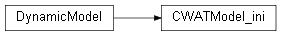
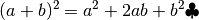
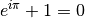
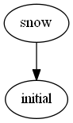

hydrological_modules package¶
Submodules¶
hydrological_modules.miscInitial module¶
-
class
hydrological_modules.miscInitial.miscInitial(misc_variable)¶ Bases:
objectMiscellaneous repeatedly used expressions Definition if cell area comes from regular grid e.g. 5x5km or from irregular lat/lon Conversion factors between m3 and mm etc.
Note
Only used in the initial phase.
-
initial()¶ - grid area, length definition
- conversion factors
- conversion factors for precipitation and pot evaporation
-
hydrological_modules.initcondition module¶
-
class
hydrological_modules.initcondition.initcondition(initcondition_variable)¶ Bases:
objectREAD/WRITE INITIAL CONDITIONS all initial condition can be stored at the end of a run to be used as a warm start for a following up run
-
dynamic()¶ Dynamic part of the initcondition module write initital conditions into a single netcdf file
Note
Several dates can be stored in different netcdf files
-
initial()¶ - initial part of the initcondition module
Puts all the variables which has to be stored in 2 lists:
- initCondVar: the name of the variable in the init netcdf file
- initCondVarValue: the variable as it can be read with the ‘eval’ command
Reads the parameter save_initial and save_initial to know if to save or load initial values
-
load_initial(name, default=0.0, number=None)¶ First it is checked if the initial value is given in the settings file
- if it is <> None it is used directly
- if None it is loaded from the init netcdf file
Parameters: - name – Name of the init value
- default – default value -> default is 0.0
- number – in case of snow or runoff concentration several layers are included: number = no of the layer
Returns: spatial map or value of initial condition
-
hydrological_modules.inflow module¶
-
class
hydrological_modules.inflow.inflow(inflow_variable)¶ Bases:
objectREAD INFLOW HYDROGRAPHS (OPTIONAL) If option “inflow” is set to 1 the inflow hydrograph code is used otherwise dummy code is used
Warning
Not included at moment
Todo
has to be revamped The pcraster routine timeinputscalar has to be replaced by reading txt -> numpy
-
dynamic()¶ Dynamic part of the inflow module
-
initial()¶ Initial part of the inflow module
-
hydrological_modules.readmeteo module¶
-
class
hydrological_modules.readmeteo.readmeteo(readmeteo_variable)¶ Bases:
objectREAD METEOROLOGICAL DATA reads all meteorological data from netcdf4 files
-
dynamic()¶ Dynamic part of the readmeteo module Read meteo input maps from netcdf files
Note
If option calc_evaporation is False only precipitation, avg. temp., and 2 evaporation vlaues are read Otherwise all the variable needed for Penman-Monteith
Note
If option TemperatureInKelvin = True temperature is assumed to be Kelvin instead of Celsius!
-
initial()¶ Initial part of meteo read multiple file of input :return:
-
hydrological_modules.snow_frost module¶
-
class
hydrological_modules.snow_frost.snow(snow_variable)¶ Bases:
objectRAIN AND SNOW
Domain: snow calculations evaluated for center points of up to 7 sub-pixel snow zones 1 -7 which each occupy a part of the pixel surface
Variables snow and rain at end of this module are the pixel-average snowfall and rain
Inheritace:
inheritance-diagramFor example:
.. inheritance-diagram:: cwatm
produces 1:

-
dynamic()¶ Dynamic part of the snow module Distinguish between rain/snow and calculates snow melt and glacier melt The equation is a modification of:
References
Speers, D.D., Versteeg, J.D. (1979) Runoff forecasting for reservoir operations - the pastand the future. In: Proceedings 52nd Western Snow Conference, 149-156
Frost index in soil [degree days] based on:
References
Molnau and Bissel (1983, A Continuous Frozen Ground Index for Flood Forecasting. In: Maidment, Handbook of Hydrology, p. 7.28, 7.55)
Todo
calculate sinus shape function for the southern hemisspere
test of math1

-
initial()¶ Initial part of the snow and frost module
- loads all the parameters for the day-degree approach for rain, snow and snowmelt
- loads the parameter for frost
Since Pythagoras, we know that
 .
.test of math2
(1)
(2)
Euler’s identity, equation (2), was elected one of the most beautiful mathematical formulas.

-
hydrological_modules.evaporationPot module¶
-
class
hydrological_modules.evaporationPot.evaporationPot(evaporationPot_variable)¶ Bases:
objectPOTENTIAL REFERENCE EVAPO(TRANSPI)RATION Calculate potential evapotranspiration from climate data mainly based on FAO 56 and LISVAP Based on Penman Monteith
References
http://www.fao.org/docrep/X0490E/x0490e08.htm#penman%20monteith%20equation
http://www.fao.org/docrep/X0490E/x0490e06.htm http://www.fao.org/docrep/X0490E/x0490e06.htm
-
dynamic()¶ Dynamic part of the potential evaporation module Based on Penman Monteith - FAO 56
Note
Only run if calc_evaporation is True
Returns: ETRef - potential reference evapotranspiration rate [m/day] EWRef - potential evaporation rate from water surface [m/day]
-
initial()¶ Initial part of evaporation type module Load inictial parameters
Note
Only run if calc_evaporation is True
-
hydrological_modules.landcoverType module¶
-
class
hydrological_modules.landcoverType.landcoverType(landcoverType_variable)¶ Bases:
objectLAND COVER TYPE
runs the 6 land cover types through soil procedures This routine calls the soil routine for each land cover type
-
dynamic()¶ Dynamic part of the land cover type module Calculating soil for each of the 6 land cover class
- calls evaporation_module.dynamic
- calls interception_module.dynamic
- calls soil_module.dynamic
- calls sealed_water_module.dynamic
And sums every thing up depending on the land cover type fraction
-
dynamic_fracIrrigation(init=False, dynamic=True)¶ Dynamic part of the land cover type module Calculating fraction of land cover
- loads the fraction of landcover for each year from netcdf maps
- calculate the fraction of 6 land cover types based on the maps
-
initial()¶ Initial part of the land cover type module Initialise the six land cover types
- Forest
- Grasland/non irrigated land
- Irrigation
- Paddy iirigation
- Sealed area
- Water covered area
And initialize the soil variables
-
hydrological_modules.evaporation module¶
-
class
hydrological_modules.evaporation.evaporation(evaporation_variable)¶ Bases:
objectEvaporation module Calculate potential evaporation and pot. transpiration
-
dynamic(coverType, No)¶ Dynamic part of the soil module
calculating potential Evaporation for each land cover class with kc factor get crop coefficient, use potential ET, calculate potential bare soil evaporation and transpiration
Parameters: - coverType – Land cover type: forest, grassland ...
- No – number of land cover type: forest = 0, grassland = 1 ...
Returns: potential evaporation from bare soil, potential transpiration
-
hydrological_modules.capillarRise module¶
-
class
hydrological_modules.capillarRise.capillarRise(capillarRise_variable)¶ Bases:
objectCAPPILAR RISE calculate cell fraction influenced by capillary rise
-
dynamic()¶ Dynamic part of the capillar Rise module calculate cell fraction influenced by capillary rise depending on appr. height of groundwater and relative elevation of grid cell
Returns: capRiseFrac = cell fraction influenced by capillary rise
-
hydrological_modules.interception module¶
-
class
hydrological_modules.interception.interception(interception_variable)¶ Bases:
objectINTERCEPTION
-
dynamic(coverType, No)¶ Dynamic part of the interception module calculating interception for each land cover class
Parameters: - coverType – Land cover type: forest, grassland ...
- No – number of land cover type: forest = 0, grassland = 1 ...
Returns: interception evaporation, interception storage, reduced pot. transpiration
-
hydrological_modules.soil module¶
-
class
hydrological_modules.soil.soil(soil_variable)¶ Bases:
objectSOIL Caclulation vertical transfer of water based on improved Arno scheme
-
dynamic(coverType, No)¶ Dynamic part of the soil module For each of the land cover classes the vertical water transport is simulated Distribution of water holding capiacity in 3 soil layers based on saturation excess overland flow, preferential flow Dependend on soil depth, soil hydraulic parameters
-
initial()¶ Initial part of the soil module
- Initialize all the hydraulic properties of soil
- Set soil depth
Todo
individual soil properties for each land cover type
-
hydrological_modules.sealed_water module¶
-
class
hydrological_modules.sealed_water.sealed_water(sealed_water_variable)¶ Bases:
objectSealed and open water runoff
calculated runoff from impermeable surface (sealed) and into water bodies
-
dynamic(coverType, No)¶ Dynamic part of the sealed_water module runoff calculation for open water and sealed areas
Parameters: - coverType – Land cover type: forest, grassland ...
- No – number of land cover type: forest = 0, grassland = 1 ...
-
hydrological_modules.waterdemand module¶
-
class
hydrological_modules.waterdemand.waterdemand(waterdemand_variable)¶ Bases:
objectWATERDEMAND calculating water demand Industrial, domenstic based on precalculated maps Agricultural water demand based on water need by plants
-
dynamic()¶ Dynamic part of the water demand module
- calculate the fraction of water from surface water vs. groundwater
- get non-Irrigation water demand and its return flow fraction
-
initial()¶ Initial part of the water demand module Set the water allocation
-
hydrological_modules.groundwater module¶
-
class
hydrological_modules.groundwater.groundwater(groundwater_variable)¶ Bases:
objectGROUNDWATER
-
dynamic()¶ Dynamic part of the groundwater module Calculate groundweater storage and baseflow
-
initial()¶ Initial part of the groundwater module
- load parameters from settings file
- initial groundwater storage
-
hydrological_modules.runoff_concentration module¶
-
class
hydrological_modules.runoff_concentration.runoff_concentration(runoff_concentration_variable)¶ Bases:
objectRunoff concentration this is the part between runoff generation and routing for each gridcell and for each land cover class the generated runoff is concentrated at a corner of a gridcell this concentration needs some lag-time (and peak time) and leads to diffusion lag-time/ peak time is calculated using slope, length and land cover class diffusion is calculated using a triangular-weighting-function
-
dynamic()¶ Dynamic part of the runoff concentration module For surface runoff for each land cover class and for interflow and for baseflow the runoff concentration time is calculated
Note
the time demanding part is calculated in a c++ library
-
initial()¶ Initial part of the runoff concentration module Setting the peaq time for:
- surface runoff = 3
- interflow = 4
- baseflow = 5
based on the slope the concentration time for each land cover type is calculated
Note
only if option includeRunoffConcentration is TRUE
-
hydrological_modules.lakes_reservoirs module¶
-
class
hydrological_modules.lakes_reservoirs.lakes_reservoirs(lakes_reservoirs_variable)¶ Bases:
objectLAKES AND RESERVOIRS calculate water retention in lakes and reservoirs
-
dynamic()¶ Dynamic part set lakes and reservoirs for each year
-
dynamic_inloop(NoRoutingExecuted)¶ Dynamic part to calculate outflow from lakes and reservoirs
- lakes with modified Puls approach
- reservoirs with special filling levels
Parameters: NoRoutingExecuted – actual number of routing substep Returns: outLdd: outflow in m3 to the network Note
outflow to adjected lakes and reservoirs is calculated separately
-
initWaterbodies()¶ Initialize water bodies Read parameters from maps e.g area, location, initial average discharge, type 9reservoir or lake) etc.
Compress numpy array from mask map to the size of lakes+reservoirs (marked as capital C at the end of the variable name)
-
initial_lakes()¶ Initial part of the lakes module Using the Modified Puls approach to calculate retention of a lake
See also
LISFLOOD maunal Annex 3 (Burek et al. 2013)
-
initial_reservoirs()¶ Initial part of the reservoir module Using the appraoch of LISFLOOD
See also
LISFLOOD manual Annex 1: (Burek et al. 2013)
-
hydrological_modules.lakes_res_small module¶
-
class
hydrological_modules.lakes_res_small.lakes_res_small(lakes_res_small_variable)¶ Bases:
objectLAKES AND RESERVOIRS calculate water retention in lakes and reservoirs
-
dynamic()¶ Dynamic part to calculate outflow from small lakes and reservoirs
- lakes with modified Puls approach
- reservoirs with special filling levels
Returns: outflow in m3 to the network
-
initial()¶ Initialize small lakes and reservoirs Read parameters from maps e.g area, location, initial average discharge, type: reservoir or lake) etc.
-
hydrological_modules.routing_reservoirs.routing_kinematic module¶
-
class
hydrological_modules.routing_reservoirs.routing_kinematic.routing_kinematic(routing_kinematic_variable)¶ Bases:
objectROUTING routing using the kinematic wave
-
dynamic()¶ Dynamic part of the routing module
- calculate evaporation from channels
- calcualte riverbed exchange between riverbed and groundwater
- if option waterbodies is true, calculate retention from water bodies
- calculate sideflow -> inflow to river
- calcculate kinematic wave -> using C++ library for computational speed
-
initial()¶ Initial part of the routing module
- load and create a river network
- calculate river network parameter e.g. river length, width, depth, gradient etc.
- calculate initial filling
- calculate manning’s roughness coefficient
-
hydrological_modules.routing_reservoirs.routing_sub module¶
-
hydrological_modules.routing_reservoirs.routing_sub.Compress(map, mask)¶ compressing map from 2D to 1D without missing values :param map: input map :param mask: mask map :return: compressed map
-
hydrological_modules.routing_reservoirs.routing_sub.Decompress(compmap, mask, emptymap)¶ Decompressing map from 1D to 2D with missing values :param compmap: compressed map :param mask: mask map :param emptymap: map with only 0 in :return: decompressed 2D map
-
hydrological_modules.routing_reservoirs.routing_sub.catchment1(dirUp, points)¶ calculates all cells which belongs to a catchment from point onward
Parameters: - dirUp –
- points –
Returns:
-
hydrological_modules.routing_reservoirs.routing_sub.decompress1(map)¶ redundant have to look if it is still used
Todo
remove it?
Parameters: map – Returns:
-
hydrological_modules.routing_reservoirs.routing_sub.defLdd2(ldd)¶ defines river network
Parameters: ldd – Returns:
-
hydrological_modules.routing_reservoirs.routing_sub.dirDownstream(dirUp, lddcomp, dirDown)¶ runs the river network tree downstream - from source to outlet
Parameters: - dirUp –
- lddcomp –
- dirDown –
Returns:
-
hydrological_modules.routing_reservoirs.routing_sub.dirUpstream(dirshort)¶ runs the network tree upstream from outlet to source
Parameters: dirshort – Returns:
-
hydrological_modules.routing_reservoirs.routing_sub.downstream1(dirUp, weight)¶ calculated 1 cell downstream
Parameters: - dirUp –
- weight –
Returns:
-
hydrological_modules.routing_reservoirs.routing_sub.lddrepair(lddnp, lddOrder)¶ repairs a river network
- eliminate unsound parts
- add pits at points with no connections
Parameters: - lddnp –
- lddOrder –
Returns:
-
hydrological_modules.routing_reservoirs.routing_sub.postorder(dirUp, catchment, node, catch, dirDown)¶ routine to run a postoder tree traversal :param dirUp: :param catchment: :param node: :param catch: :param dirDown: :return: dirDown and catchment
-
hydrological_modules.routing_reservoirs.routing_sub.subcatchment1(dirUp, points, ups)¶ calculates subcatchments of points
Parameters: - dirUp –
- points –
- ups –
Returns:
-
hydrological_modules.routing_reservoirs.routing_sub.upstream1(downstruct, weight)¶ Calculates 1 cell upstream
Parameters: - downstruct –
- weight –
Returns:
-
hydrological_modules.routing_reservoirs.routing_sub.upstreamArea(dirDown, dirshort, area)¶ calculates upstream area :param dirDown: array which point from each cell to the next downstream cell :param dirshort: :param area: area in m2 for a single gridcell :return:
hydrological_modules.waterbalance module¶
-
class
hydrological_modules.waterbalance.waterbalance(waterbalance_variable)¶ Bases:
objectWATER BALANCE
- check if water balnace per time step is ok ( = 0)
- produce an annual overview - income, outcome storage
-
checkWaterSoilGround()¶ Check water balance of snow, vegetation, soil, groundwater
-
dynamic()¶ Dynamic part of the water balance module If option sumWaterBalance sum water balance for certain variables
-
initial()¶ Initial part of the water balance module
-
waterBalanceCheck(fluxesIn, fluxesOut, preStorages, endStorages, processName, printTrue=False)¶ Dynamic part of the water balance module Returns the water balance for a list of input, output, and storage map files
Parameters: - fluxesIn – income
- fluxesOut – this goes out
- preStorages – this was in before
- endStorages – this was in afterwards
- processName – name of the process
- printTrue – calculate it?
Returns:
-
waterBalanceCheckSum(fluxesIn, fluxesOut, preStorages, endStorages, processName, printTrue=False)¶ Returns the water balance for a list of input, output, and storage map files and sums it up for a catchment
Parameters: - fluxesIn – income
- fluxesOut – this goes out
- preStorages – this was in before
- endStorages – this was in afterwards
- processName – name of the process
- printTrue – calculate it?
Returns: Water balance as output on the screen